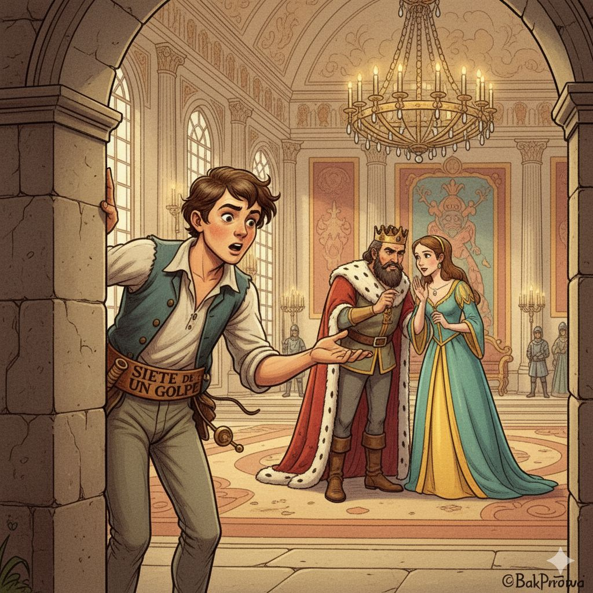
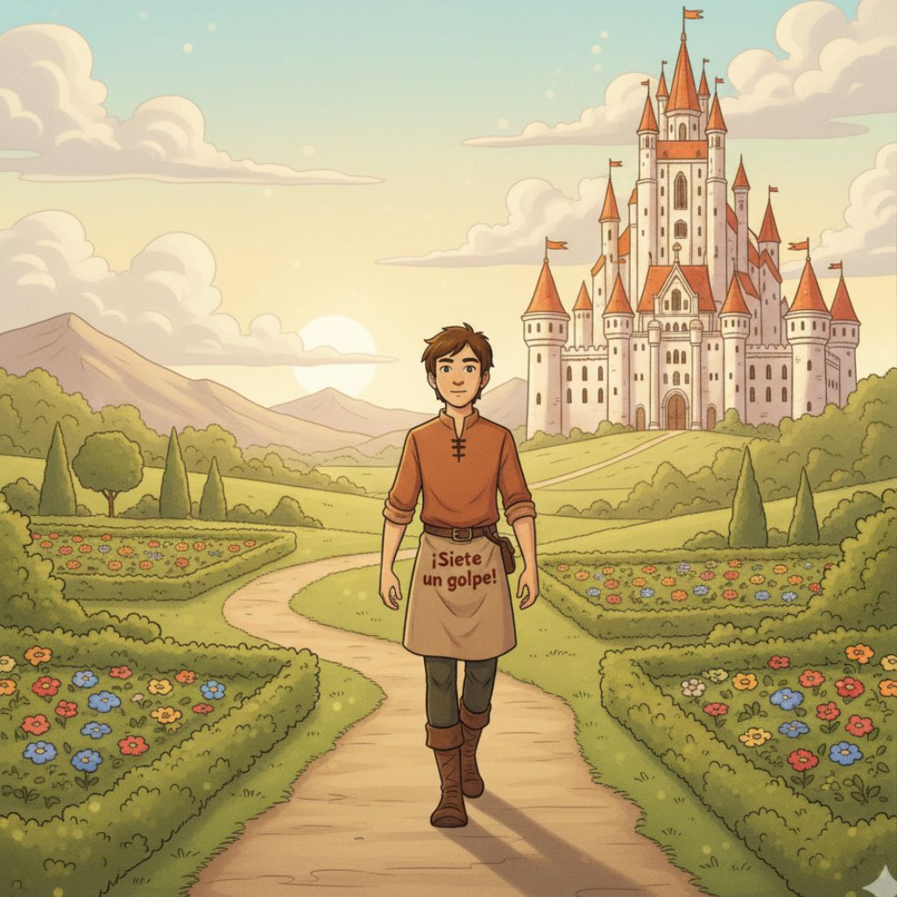
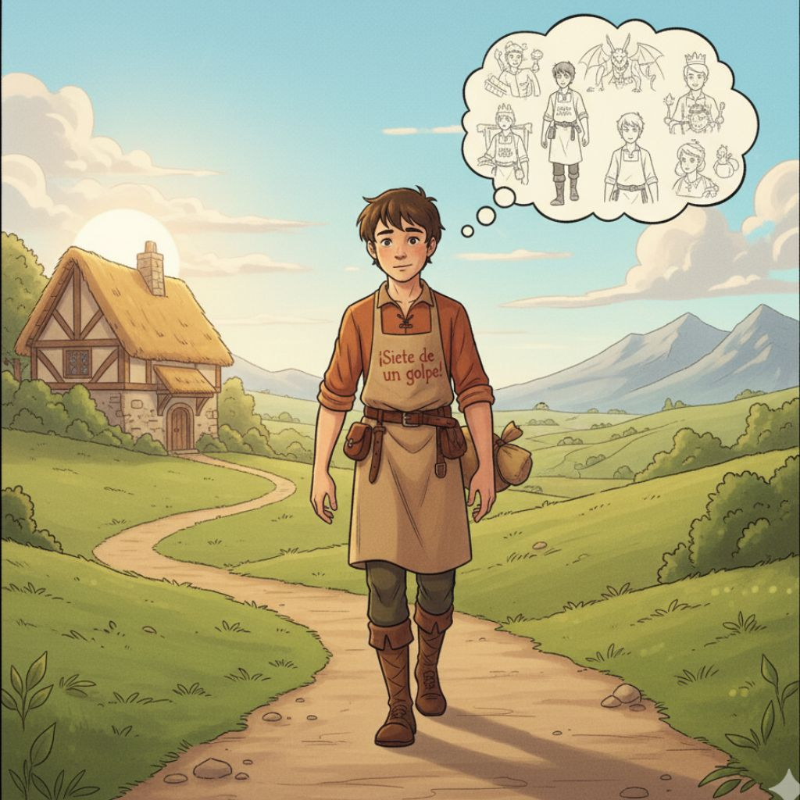
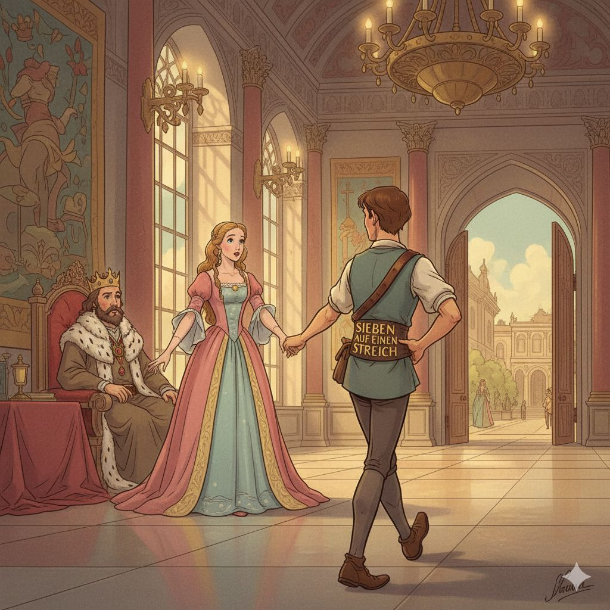

El cuento narra la historia de un joven sastrecillo que un día, mientras trabajaba, mata de un solo golpe a siete moscas que lo estaban molestando. Orgulloso de su hazaña, decide bordar en su cinturón la frase “Siete de un golpe”, aunque no aclara que eran moscas. Con esa frase ambigua, todos interpretan que derrotó a siete hombres, lo que despierta admiración y asombro. Animado por su supuesta valentía, el sastrecillo sale a recorrer el mundo. En su aventura se encuentra con distintos desafíos que supera usando más su astucia que la fuerza: engaña a dos gigantes, captura a un unicornio, atrapa a un jabalí salvaje y resuelve las pruebas que le impone un rey desconfiado que no quiere recompensarlo.
Finalmente, tras demostrar una y otra vez su ingenio, logra ganarse un lugar en el reino y casarse con la princesa, convirtiéndose en un personaje respetado (aunque muchos siguen sin saber que su famosa hazaña original era solo contra moscas).

Nuestra aventura gráfica del Sastrecillo Valiente cuenta la historia de un joven sastre que, de un solo golpe, mata a siete moscas...